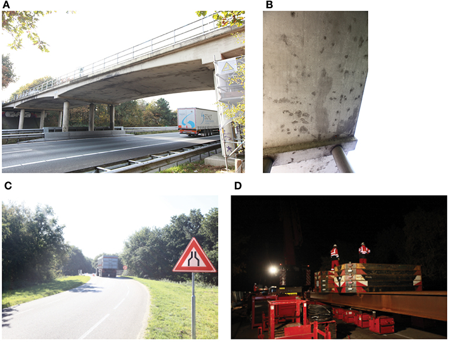

Viaduct De Beek, which crosses the A67 motorway in North Brabant, in the Netherlands, was built in 1963 and carried two lanes of traffic. Later an assessment calculated that its bending capacity was insufficient in all spans, so the road over it was cut to one lane.
The engineers wanted a measurement instead of a calculation, so in November 2015 they loaded the bridge itself. They set up a steel beam on the deck, stacked counterweights on it, and used hydraulic jacks to push down on the first span, raising the load in steps and measuring how the concrete responded at each one.
A test like this is planned around the point at which it must stop. Before loading starts, the engineers write down limits: how far the concrete may stretch, how wide the cracks may open, how much crack remains once the load is removed, and how much stiffness the structure may lose. If the bridge starts to move more with each step of load than with the step before, loading stops, because going further “can result in permanent damage or collapse.” Those limits had themselves been tested. Researchers had loaded beams sawn from another Dutch bridge until they broke, and the criteria fired at between 46 and 58 per cent of the breaking load, well before failure.
At De Beek the load went up to 1,751 kilonewtons, about 178 tonnes, a target set to match the traffic load the design code requires. The span held, and for that span the measurement settled the question: it could carry two lanes.
The span they could not reach
But the bridge stayed at one lane, because the span they had tested was not the one that mattered most. The first span, as the engineers noted, “does not cross the highway.” The middle spans do, and those were the critical ones. Testing them would have meant closing the motorway, which was not permitted, so they stayed untested.
When Eva Lantsoght and her colleagues wrote up the test in a 2019 paper, they reported the limit alongside the result. Right after reporting the successful test, they wrote: “However, the second span is critical and thus other assessment methods are required to evaluate viaduct De Beek and to evaluate if the bridge can be opened again for two lanes of traffic.”
By then they had spent four years on that other assessment. They built computer models of the critical span and tuned them against what the sensors had recorded on the tested one, but a second 2019 paper by the same group found that no single model matched all the measurements, and that “many choices are left to the engineer.” Traffic was still limited to one lane.

Your agent’s viaduct
When an agent tells you the new booking form is finished, you have a claim about something you have not tested yet, as the engineers had a calculation about a bridge they had not yet loaded. You can do what they did, and write down what failure would look like before you look. A booking made on a phone should appear in the calendar, a double booking should be refused, and the confirmation email should arrive. Then ask the agent to show you each one happening, and break the booking on purpose once, so you know the first check would notice.
The engineers could not reach the spans over the motorway, and they said so in the same paper that reported their success. Ask the agent the question they answered: what did it not test? It may have tested only the case it built for, and the case it did not reach, say an account with two calendars, is where a user may find the problem first. If you put the answers in one place, the gap is hard to miss.
| Check | Evidence to see | Seen? |
|---|---|---|
| A booking made on a phone appears in the calendar | The calendar entry | yes |
| A double booking is refused | The error on the screen | yes |
| The confirmation email arrives | The email in the inbox | yes |
| The first check fails when booking is broken on purpose | The check reporting a failure | yes |
| An account with two calendars | Nothing yet | not tested |
The last row is the second span. Lantsoght’s team wrote theirs down, while a report from an agent that only says “done” leaves that row for a user to find.